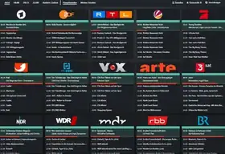
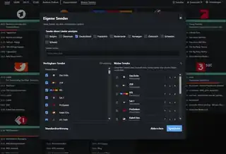
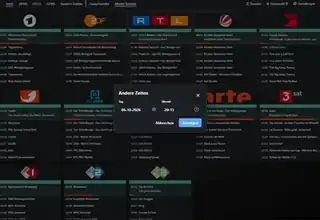
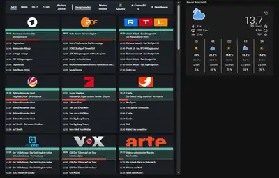

Programmübersicht
Sender, Zeiten und Sendungen auf einen Blick – mit direktem Sprung zu 18:00, 20:15 und 22:00 Uhr.
Ein Blick auf Programmübersicht, persönliche Senderlisten, Zeitauswahl und die TV-Guide-Karte direkt im Home-Assistant-Dashboard.

Sender, Zeiten und Sendungen auf einen Blick – mit direktem Sprung zu 18:00, 20:15 und 22:00 Uhr.

Favoriten aus den unterstützten Ländern auswählen und in die gewünschte Reihenfolge bringen.

Datum und Wunschzeit auswählen, ohne die Programmübersicht zu verlassen.

TV Guide direkt neben anderen Home-Assistant-Karten im Dashboard.